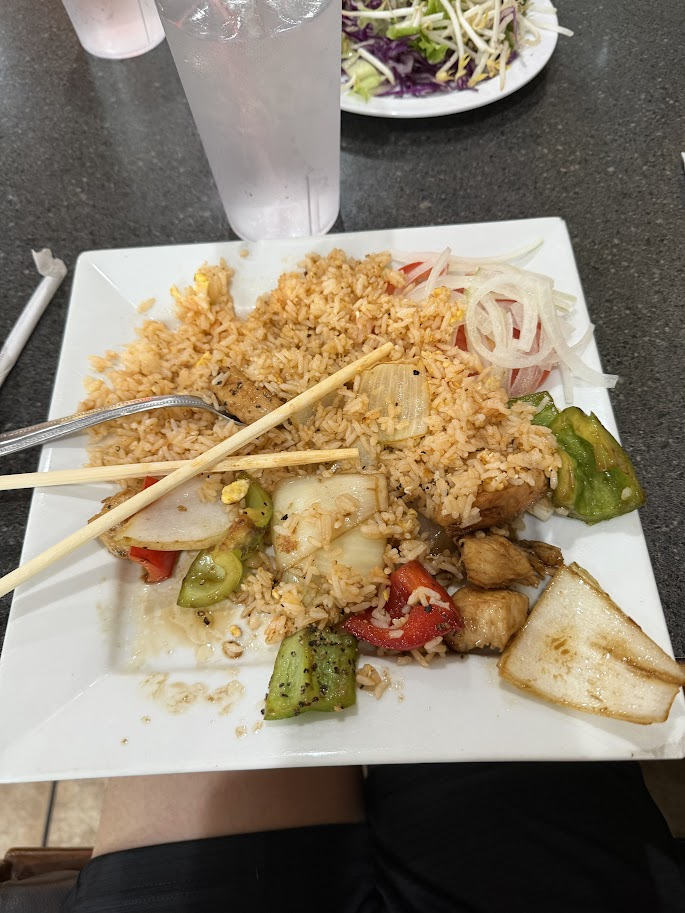

Home
Fried Rice

This recipe is for a very tasty fried rice that Eric did not order because he ordered Bun Bo Hue.
Ingredients
- White Rice
- Bell Peppers
- Pepper
- Salt
- Onion
- Chicken
- Eric's feet
- Oil
- Lettuce
- Secret seasoning
- Scallions
Steps
-
Prep and Scramble Eggs: Heat 1 tablespoon of oil (or butter) in
a large wok or skillet over medium-high heat. Add the beaten
eggs and scramble them until cooked through. Transfer the cooked
eggs to a separate bowl and set aside.
-
Cook vegetables and aromatics: Add another tablespoon of oil to the same wok or skillet.
Stir in the onions, bell peppers, and scallions. Cook for 3-4 minutes until they are tender
and fragrant.
-
Fry the rice: add a chilled, cooked rice to the pan, breaking up any chunks with your spatula.
Stir constantly to combine the rice with the vegetables.
-
Season and combine: Pour the soy sauce, oyster sauce (if using) and sesame oil over the rice mixture. Continue to stir fry for 3-5 minutes,
allowing some of the rice grains to brown and crisp by letting them rest briefly on the hot pan between stirs.